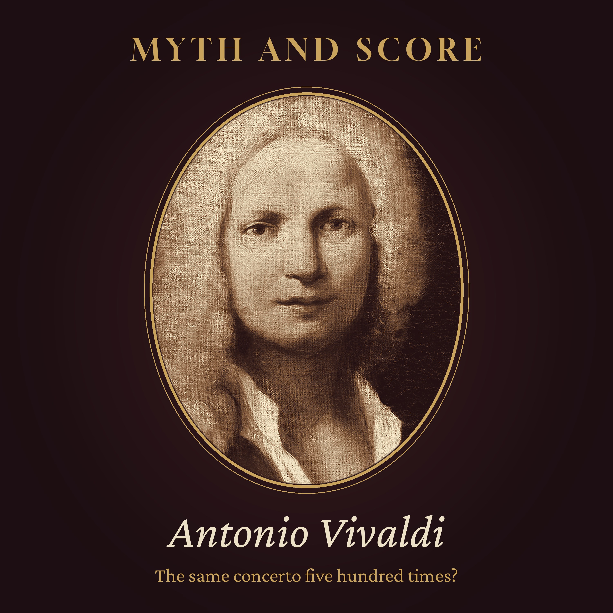

Myth and Score · Episode 7 · 45 min
Did Vivaldi Write the Same Concerto 500 Times?
Did Antonio Vivaldi really write the same concerto five hundred times? The jibe is usually signed "Stravinsky", but what Stravinsky actually said, in his 1959 conversations with Robert Craft, was that Vivaldi could "compose the same form so many times over"; the sharper version with the number is most often credited to Luigi Dallapiccola, and nobody has produced his words. Tonight we hold the joke up to the record: a sickly red-haired boy baptised at home in Venice in 1678, a priest who stopped saying Mass, the orchestra of foundling girls at the Pietà, L'estro armonico and the young Bach arranging it in Weimar, ten concertos delivered in three days, the Four Seasons and their sonnets, two concertos a month, a death in Vienna in 1741 (a simple funeral, not the pauper's grave of legend), two centuries of silence, and the volumes that reached Turin in 1926, bought by two grieving fathers in memory of their sons. Inside: about five hundred concertos for more than twenty instruments, one plan, and a fair verdict. Chapters: The story everyone knows · Who said it? · A child in a hurry · The red priest · The girls of the Pietà · A harmonic fancy · The man in Weimar · The impresario · The contest between harmony and invention · Two concertos a month · A city that moved on · Vienna, July 1741 · Two hundred years · The crates from Monferrato · A long road back · Counting the concertos · The same concerto? · The verdict · Listening again. Episode picture: portrait thought to show Antonio Vivaldi, anonymous, c. 1723, Museo internazionale e biblioteca della musica, Bologna, public domain (Wikimedia Commons). Read by a synthetic voice; script written and fact-checked by the show's team.
The script
Somewhere in the twentieth century, a composer made a joke about another composer who had been dead for more than two hundred years... and the joke became more famous than most of the music it was about.
The joke goes like this. Antonio Vivaldi did not write five hundred concertos. He wrote one concerto, five hundred times.
Myth and Score. Episode seven... Did Vivaldi write the same concerto five hundred times?
On this show, we take the most famous stories about great composers and hold them up to the light. Some turn out to be true. Some are half true. And some, like tonight's, are not really stories at all, but a judgement, dressed up as a fact.
Tonight's question has a strange shape. It is not about a poisoning, or a pact with the Devil, or a vision of Heaven. It is about a number. And to test it, we have to ask two things. Who actually said it? And when you put the concertos side by side, is it true?
To find out, we will walk through a parish in the east of Venice in the 1670s, a home for abandoned children where the orchestra was made of girls, a printing house in Amsterdam, a court in Weimar where a young organist sat copying, an opera house on the Grand Canal, a rented room in Vienna in the summer of 1741... and a set of crates that arrived at a university in Turin, nearly two centuries later.
Chapter one. The story everyone knows.
Let us begin with the story as most people hear it.
In this version, Vivaldi is a sort of musical factory. He sits in Venice, turning out concertos the way a baker turns out loaves. Fast, slow, fast. A bright opening for the strings, a soloist who runs up and down the scale, a sad little middle movement, and a quick, cheerful ending. Then he starts the next one, which is the same, only in a different key.
He wrote, the story says, hundreds of them. And apart from the Four Seasons, which everyone knows from telephone queues, hotel lobbies and wedding receptions, they are all the same piece.
And the person who said so, in this version, was Igor Stravinsky... one of the greatest composers of the twentieth century, and a man who knew a thing or two about how music is put together. If Stravinsky said it, it must be worth listening to.
But the first thing we discover, when we go looking, is that we are not even sure who told it.
Chapter two. Who said it?
Let us start with Stravinsky, because we can actually check what he said.
In 1959, Stravinsky published a book of conversations with his young assistant, the conductor Robert Craft. It was set out as questions and answers. And on one page, Craft asks him whether he is interested in the revival of the Italian masters of the eighteenth century, which was then in full swing.
Stravinsky's answer is short. Not very, he says. Vivaldi, he says, is greatly overrated... a dull fellow, who could compose the same form so many times over.
That is the real sentence, in print. Notice what it says, and what it does not say. It says the same form. It does not say the same concerto. And it gives no number at all.
So where does the number come from?
Most often, the famous version, the one with the hundreds, is credited to another composer... the Italian Luigi Dallapiccola, a gentle and serious modernist from the generation after Stravinsky. In that version, Vivaldi did not write six hundred concertos, but one concerto, six hundred times. Or four hundred. Or five hundred. Every source seems to have its own number.
And here we must be honest. Nobody, as far as we could find, has produced the original. There is no letter, no lecture, no interview, with a date and a page, in which Dallapiccola can be seen saying it. We do not know when he said it, or even for certain that he did.
To see whether the joke is fair, we need to meet the man.
Chapter three. A child in a hurry.
Antonio Lucio Vivaldi was born in Venice on the fourth of March, 1678.
He seems to have been in danger from the first hour. He was baptised at home, straight away, by the midwife... which was done only when a newborn child might not live. Nobody knows exactly why. Some writers point to his weak health. Others say that an earthquake shook the city that day, and that the family was afraid. Both are guesses. Two months later, on the sixth of May, the register of his parish church, San Giovanni in Bragora, records that the child was brought to the church for the rest of the ceremony.
His father, Giovanni Battista Vivaldi, was a barber by trade. He was also a fine violinist... good enough to be taken into the orchestra of Saint Mark's, the great basilica of the city. And he had red hair. In Venice, he was known as Giovanni Battista Rossi... the red one.
Antonio was the eldest of the children who lived, and he inherited both of his father's gifts. The violin, and the red hair.
It was almost certainly his father who taught him to play. And by Christmas Eve, 1696, the son was playing beside him at Saint Mark's, as an extra violinist.
For the rest of his life, the two were close. The father helped the son, travelled with him, ran errands for him, and worked beside him.
Chapter four. The red priest.
At the age of fifteen, in 1693, Antonio received the tonsure... the first step towards the priesthood. Ten years later, in March 1703, he was ordained a priest.
But there was a difficulty. From birth, he suffered from what he called a tightness of the chest. Most historians think it was a form of asthma. It made walking hard for him, and it made him depend on others, especially when he travelled.
Many years later, in 1737, he explained it in a letter to a patron. Soon after he was ordained, he wrote, he had said Mass for a year or a little longer. Then three times he had had to leave the altar before the end, because of his illness. And so he stopped. He had not said Mass for twenty-five years, he wrote, and he never would again... not because anyone had forbidden it, but because of his health.
There is a much better-known story. In it, the young priest is saying Mass when an idea for a fugue comes into his head. He leaves the altar, goes into the sacristy, writes it down, and comes back. It is a charming picture. But it comes from long after his time, and it does not match what Vivaldi himself wrote.
So the man was a priest who almost never acted as one. And he had a nickname that has followed him ever since... il Prete Rosso. The red priest.
Here is a small surprise. The first time it appears in a surviving document is not until 1729, in the papers of a court case against his younger brother. By then, Antonio was past fifty.
Chapter five. The girls of the Pietà.
In September 1703, the same year he was ordained, Vivaldi was taken on as a teacher at the Ospedale della Pietà.
The Pietà was a home for abandoned children, paid for partly by the Venetian state. A baby could be left there by a mother who could not keep it. The boys were taught a trade and sent out into the world when they were grown. The girls usually stayed, unless they married, or became nuns.
And some of those girls were taught music.
A chosen group of forty or more women and girls, known as the coro, sang and played at the services in the Pietà's chapel.
Vivaldi's post was maestro di violino... the master of the violin. He taught the more advanced string players, rehearsed the orchestra, and, above all, provided new music for them to play.
Think of what that meant. A composer, still in his twenties, with an orchestra of his own, ready to play whatever he put in front of them, every week. Players who were good, and getting better. And not only on the violin. Over the years, the girls of the Pietà learned the cello, the viola d'amore, the oboe, the flute and the recorder, the bassoon, the mandolin, the chalumeau... an early cousin of the clarinet... and more besides.
This is the first thing to keep in mind about the concertos. A great many of them were not written for publishers, or for posterity. They were written for a particular room, for particular players, who needed something new to learn. A teacher who must bring in a fresh piece every few weeks is bound to have habits. But he also has a laboratory.
In 1716, he was promoted to maestro de' concerti... the master of the concerts. He came and went, quarrelled and returned, for most of the rest of his life.
Chapter six. A harmonic fancy.
Before 1711, Vivaldi was known in Venice, but hardly anywhere else. He had published a book of trio sonatas in 1705, and a book of violin sonatas in 1709, both in Venice. They were well received. They did not change the world.
Then, in 1711, came his Opus 3. Twelve concertos, printed not in Venice, but in Amsterdam, by the publisher Estienne Roger, whose music travelled all over northern Europe. He called it L'estro armonico... which might be put into English as the harmonic fancy, or the spark of harmony.
It was a sensation.
The set is cleverly made. It has concertos for four violins, for two violins, and for one, in turn, with a cello joining in now and then. And the writing has something that Italian music before it had only hinted at... a kind of drive. Short, sharp themes, played by the whole orchestra and coming back again and again, with the soloists spinning out brilliant passages in between. It is energetic, clear, and easy to follow, and it was new.
And in a small German court, a young organist read them very carefully indeed.
Chapter seven. The man in Weimar.
In 1713, the young Prince Johann Ernst of Saxe-Weimar came home from his studies in the Netherlands. He was a keen musician, and it seems he brought with him a great deal of new music from Amsterdam... very probably including Vivaldi's Opus 3.
At the Weimar court, the organist was a man in his late twenties named Johann Sebastian Bach.
Between about the summer of 1713 and the summer of 1714, Bach arranged a whole series of Italian concertos for solo keyboard... some for organ, some for harpsichord. Several of them were by Vivaldi. The concerto in A minor for two violins, from L'estro armonico, became an organ concerto. So did the concerto in D minor from the same set. Another became a harpsichord concerto in D major. And later, Bach took the concerto for four violins in B minor and turned it into a concerto for four harpsichords and strings.
Why would Bach, of all people, sit copying out the music of a Venetian priest?
Because he was learning. His first biographer, writing at the beginning of the nineteenth century, said that Bach studied these concertos to learn how to think in music... how to order ideas, how they follow one another, how a piece is built. Whatever his exact words, the music itself shows it. After Weimar, Bach's own concertos and organ works have a new kind of energy. The returning theme, the clear plan, the forward drive... much of it came through Vivaldi.
Hold on to that. When people say that every Vivaldi concerto is the same, they are describing, often without knowing it, a plan that Bach found worth copying out by hand.
Chapter eight. The impresario.
Vivaldi did not want to be only a violinist who wrote concertos. He wanted to be a composer of everything... and above all, of opera.
His first full opera, Ottone in villa, was given in Vicenza in 1713. Later that year, he and his father took on the running of a small Venetian theatre, the Sant'Angelo, and for years he chose the operas, hired the singers, and put on a good many of his own. Late in life he claimed to have written ninety-four operas. Scholars have identified fewer than fifty, and the music of only about twenty survives.
In 1715, a German traveller, Johann Friedrich von Uffenbach, heard him play in the theatre, and wrote in his diary of a cadenza that frightened him, the fingers so close to the bridge. A few weeks later, Uffenbach asked him for some concertos. Three days later, by his own account, he received ten.
And in 1739, a French magistrate, Charles de Brosses, wrote that Vivaldi had a fury for composition. He had heard him boast that he could write a concerto, with all its parts, faster than a copyist could copy it out.
So here is the grain of truth in the joke. Vivaldi wrote very fast, and a great deal. He had a method, and habits, and a stock of ideas.
But speed is not the same thing as sameness. And the best way to see that is to look at the most famous concertos he ever wrote.
Chapter nine. The contest between harmony and invention.
In 1725, a set of twelve concertos appeared in Amsterdam. It was Vivaldi's Opus 8, and he gave it a grand title... Il cimento dell'armonia e dell'inventione. The contest between harmony and invention.
The first four are the ones we call the Four Seasons. Each comes with a sonnet describing its season, and lines of the poem are printed in the score, above the very passages that paint them. Nobody knows who wrote the sonnets. Vivaldi may have written them himself. It cannot be proved.
In Spring, the birds greet the season, and three violins sing high, trilling bird calls. Then a storm, and then the birds come back. In the slow movement, a goatherd sleeps in a meadow with his faithful dog beside him... and over the soft line of the violins, the violas play one rough, repeated note, like a dog barking. Vivaldi even marks it in the parts... the dog that barks.
In Autumn, there is the harvest, the dancing and the wine, and then the hunt at dawn. In Winter, teeth chatter in the icy wind, the rain falls outside while we sit by the fire, and people slip and fall on the ice.
Is this the same concerto, four times?
It uses the same plan. Fast, slow, fast. A returning theme, and episodes for the soloist in between. But inside that plan, there are birds and dogs, a storm and a hunt, heat and ice. The plan is like the form of a sonnet... fourteen lines, a fixed pattern of rhymes. Nobody says that every sonnet is the same poem.
And Vivaldi seems to have known it. He called the set a contest between harmony and invention. The harmony is the rule. The invention is what you do with it.
Chapter ten. Two concertos a month.
The 1720s were Vivaldi's busiest years.
He worked for the governor of Mantua, wrote operas for Rome, and travelled more than ever.
And in 1723, the Pietà took him back... but on his terms. He would no longer teach every week. Instead, he agreed to send them two concertos a month, by post if he was away, and to rehearse them himself when he was in the city.
Two concertos a month. The arrangement lasted until the end of 1729. If you want to understand why there are so many Vivaldi concertos, it is partly in that line of the Pietà's records. It was his job.
In these years, a singer came into his life. Her name was Anna Tessieri, but she was known as Anna Girò. She was a contralto, born in Mantua around 1710. She sang in one of his operas in 1726, and from then on she was his favourite leading lady, and the two were often seen together.
People talked, then and since. But there is no evidence that they were lovers. Vivaldi insisted that they did not live together, and Anna's half-sister, Paolina, went everywhere with them, as a chaperone.
In 1727, he dedicated another set of concertos, called La cetra... the lyre... to the Emperor Charles the Sixth, in Vienna. And in September 1728, when the emperor travelled to inspect the new port of Trieste, Vivaldi met him on the way, and was given a medal.
It was the high point of his fame. So popular was his name that publishers and copyists began to print other men's music under it.
Think about that for a moment. Some of the concertos that were sold as Vivaldi's in his lifetime were not his at all. People were faking him. You do not fake a man whose music everyone finds dull.
Chapter eleven. A city that moved on.
But fashions change, and they changed against him.
In the 1730s, a new style of opera came up from Naples, lighter and smoother, and Vivaldi was no longer the newest thing in Venice. In 1736, his father died... the man who had taught him, and travelled with him, all his life.
Then came Ferrara. Between 1737 and 1739, Vivaldi tried three times to put on operas there, and each time it went wrong. In 1738, the archbishop, Cardinal Tommaso Ruffo, forbade him to direct them himself... because he was a priest who did not say Mass, and because of his friendship with Anna Girò. It was in a letter about this that Vivaldi explained his illness.
In 1740, he sold one last batch of concertos to the Pietà, and left Venice. He was sixty-two.
Chapter twelve. Vienna, July 1741.
Why Vienna? It is often said that he went to find a post at the emperor's court. More likely, the historians now think, he hoped to put on operas at the city's theatre, the Kärntnertortheater, near the city walls.
If so, his luck ran out almost at once. In October 1740, the Emperor Charles the Sixth died, unexpectedly. The court went into mourning, and the theatres were closed. There would be no operas.
So Vivaldi stayed on in Vienna through the winter and the spring, living in rented rooms, in a house belonging to the widow of a saddler, close to the Kärntnertor. He sold what music he could to a few noble patrons.
He died there at the end of July 1741, in the night of the twenty-seventh to the twenty-eighth. He was sixty-three. The death notice gives the cause as an innerer Brand... an inner burning, an inflammation inside the body.
And here we meet a second legend, one that is often told alongside the first. Vivaldi, it is said, died a pauper, and was thrown into a pauper's grave.
He did die short of money. That much is true. But he was buried the same day, in the burial ground of the city hospital, near the great new church of Saint Charles. A record of the burial, as it is usually quoted, gives the cost as nineteen florins and forty-five kreuzer, with the smallest peal of bells. If that is right, it was a simple, ordinary funeral... not a pauper's.
There is one more legend attached to that day. It is sometimes said that among the choirboys of Saint Stephen's Cathedral who sang at his funeral was a nine-year-old boy named Joseph Haydn. It is a lovely thought... the old age of the Baroque, sung to its grave by the future of music. But scholars who have studied the cathedral's records have found that there was no music at the service at all. The young Haydn was in Vienna. But he did not sing for Vivaldi.
The burial ground itself was cleared long ago, and where exactly in it he lay, nobody knows.
Chapter thirteen. Two hundred years.
After his death, Vivaldi's music fell almost silent.
Only in England did a few of his concertos go on being played for a while.
For more than a century, his name survived mainly as a footnote... and the footnote was Bach.
In the nineteenth century, as Bach was rediscovered, scholars came across his keyboard arrangements of Vivaldi's concertos. And at first, they looked at the originals only to show how much better Bach's versions were. Vivaldi was the raw material. Bach was the genius who refined it.
Then, around 1860, a cabinet that had stood for a century behind the organ of the court church in Dresden was opened. Inside was the library of Johann Georg Pisendel, the great Dresden violinist, who had studied with Vivaldi in Venice in 1716 and 1717, and taken home a large bundle of his music.
It was a beginning. But almost all of Vivaldi's operas, his church music, his cantatas, and hundreds of his concertos were still missing. Most people assumed that they were lost for good.
They were not lost. They were in a monastery school in Piedmont, waiting.
Chapter fourteen. The crates from Monferrato.
In 1926, Alberto Gentili, a professor of music history at the University of Turin, was asked to look at some old music.
The request came through the director of the National University Library in Turin, Luigi Torri. A school run by the Salesian fathers, the college of San Carlo at Borgo San Martino, in the hills of Monferrato, wanted to sell a collection of old volumes that had been left to it. Could the library tell them what it was worth?
The volumes were sent to Gentili. When he opened them, in the autumn of 1926, he found Vivaldi. Volume after volume of him... concertos, operas, sacred works, many of them in Vivaldi's own hand, a great many never heard of before.
The library had no money to buy them. So the find was kept quiet, while Gentili looked for a buyer.
He found one in a Turin banker, Roberto Foà. In 1927, Foà bought the volumes and gave them to the library, in memory of his little son, Mauro, who had died as a baby a few months before. It is still called the Mauro Foà collection.
But when Gentili studied the volumes more closely, he found that something was wrong. They were numbered, and numbers were missing. This was only half of a collection.
So began a search. The trail led back through two centuries. After Vivaldi's death, it seems, his own manuscripts had been sold to a Venetian collector. Later, they had been gathered up again and bought by a Genoese count, Giacomo Durazzo, a diplomat and a great collector. In the next century, the collection had been divided between two brothers of the Durazzo family. One brother's half had been left to the Salesian school. The other half was still in Genoa, in the hands of the last of the family, Giuseppe Maria Durazzo.
He was, by every account, a difficult man. The talks went on for three years.
At last, in 1930, he agreed to sell, at a high price, and with strange conditions... among them, that the music must not be published or performed. Once again, Gentili needed a buyer. Once again he found one... a textile manufacturer named Filippo Giordano. And once again, the gift was made in memory of a child... Giordano's own little son, Renzo, who had also died young.
And so, by the end of October 1930, the two halves were together again in Turin. The Foà and Giordano collections. Between them, they hold the great majority of Vivaldi's surviving manuscripts in his own hand... hundreds of concertos, most of his surviving operas, and much of his church music, including a Gloria that choirs everywhere now know.
Two fathers, grieving for two small sons, gave Vivaldi back to the world.
Chapter fifteen. A long road back.
Even then, very little of the Turin music reached the public at first. The ban on publication was fought over in the courts until the late 1930s. And in 1938, Italy's new racial laws drove Jewish citizens out of public life. Alberto Gentili was Jewish. He lost his post at the university, and spent much of the war in hiding. The man who had found Vivaldi was not allowed to bring him to the world.
Others carried the work on. In September 1939, in Siena, the composer Alfredo Casella organised a whole week of Vivaldi. But the Second World War had begun two weeks before, and the world had other news.
Then, in 1947, an institute devoted to Vivaldi was founded in Venice, and the publisher Ricordi began a great edition of his instrumental works. Hundreds of concertos were printed, many for the first time. At the same time came the long-playing record, and the Four Seasons found a new life.
That is the world in which Stravinsky's remark was made, and the joke about the five hundred concertos went round. Vivaldi was no longer a footnote. He was a fashion. And fashions invite jokes.
Chapter sixteen. Counting the concertos.
So how many are there?
To count them, scholars first needed a list. Then a Danish musicologist named Peter Ryom brought them together, in a catalogue published in 1974.
Since then, every work by Vivaldi has carried an RV number. RV stands for Ryom-Verzeichnis... the Ryom catalogue. When a concert programme says, for example, RV two hundred and sixty-nine, it means Spring.
The catalogue has kept growing. In its latest edition, in 2018, it lists more than eight hundred and twenty authentic works. And it is still growing. In 2010, a researcher named Andrew Woolley was looking through family papers of the Marquesses of Lothian, in the National Archives of Scotland in Edinburgh, when he recognised a flute concerto called Il gran Mogol... the Great Mogul. It had been listed in an old catalogue, but believed lost.
Out of all those works, the concertos number about five hundred. So the famous figure, by luck, is close to the truth.
But look at what they are for.
More than three hundred are for one solo instrument with strings. About two hundred and thirty of those are for the violin, which is natural, since it was his own instrument. But there are also around forty for the bassoon. Around twenty-five or more for the cello. About fifteen for the oboe, and others for the flute and the little recorder.
Then there are concertos for two instruments, and for several. Concertos for two cellos, for two trumpets, for two mandolins. A concerto for a single mandolin. Concertos for the lute, and for the viola d'amore, a violin with extra strings that ring in sympathy. And around sixty concertos with no soloist at all, just for strings.
So the number five hundred is real. But it is a number made of many different things.
Chapter seventeen. The same concerto?
Now we can ask the question fairly. Is it the same concerto, five hundred times?
Let us give the joke its due first, because there is something in it.
Most of the concertos do follow one plan. Three movements, fast, slow, fast. In the fast movements, a main theme for the whole orchestra, called the ritornello... the little return... which comes back, in different keys, between the soloist's passages. Vivaldi did not invent this plan alone, but he made it the standard, so firmly that composers all over Europe used it after him.
And he had habits. Certain kinds of opening. Certain kinds of running passage for the violin. He wrote fast, and when you write fast, you reach for what works.
He also reused his own music. A movement from one concerto might turn up in another, or in an opera. Even in his own time, people noticed it. In the 1750s, the German flautist Johann Joachim Quantz praised his early concertos, but complained that later, writing so much for the theatre, he had sunk into a kind of frivolous carelessness.
So if you choose a handful of his ordinary violin concertos, written in a hurry for a Tuesday at the Pietà, and play them one after another, you may well find them alike.
But now look at the other side.
The plan is a frame, not a piece. In the same frame, Vivaldi painted a bird, a storm, a sleeping dog, a frozen road. He wrote for the lonely bassoon, the plucked mandolin, the strange buzzing violin that imitates a marine trumpet. He changed the number of soloists, the colours of the orchestra, the mood of the slow movements, from a single long song to a ghostly, muted night.
The plan, in fact, is the reason there are so many. A frame that holds anything can be filled again and again, for a different player, a different instrument, a different feast. It was a tool. And Bach, who knew a good tool when he saw one, took it home and built with it for the rest of his life.
And here is a last, quiet irony. Stravinsky himself, in the years before he made that remark, had written a great deal of music that looked back to the eighteenth century... borrowing its forms, its dances, its clear, bright patterns, and filling them with his own ideas. He knew better than anyone that you can use the same form many times over, and make something new each time.
That is exactly what Vivaldi did.
Chapter eighteen. The verdict.
So what is left, when we hold the myth up to the light?
The quotation is muddled. Stravinsky did call Vivaldi overrated and dull, in a book of conversations published in 1959. But what he said was that Vivaldi could compose the same form so many times over... not the same concerto, and with no number. The sharper version, with its four hundred, five hundred or six hundred times, is usually credited to Luigi Dallapiccola, but nobody has produced his exact words, or a date. It has been passed from one programme note to the next ever since.
The number is about right. About five hundred of his concertos survive. A great many of them are known today only because two fathers in Turin bought his own manuscripts, in memory of their sons, between 1927 and 1930.
The speed is real. A traveller received ten concertos from him in three days, and another heard him boast that he could compose faster than a copyist could copy. For years, it was his job to deliver two new concertos a month.
The sameness is partly true. Most of the concertos share one plan, and he had habits, and reused his own music, as nearly every composer of his age did.
But the claim that they are all the same piece is legend. Inside that plan, the concertos are written for more than twenty different instruments, in endless combinations, with storms and birds, hunts and nights, for players he knew by name. And the plan itself was so good that Bach copied it out by hand.
Along the way, two smaller legends fall too. The fugue at the altar has no support from Vivaldi's own words. And the pauper's grave was, as far as the records show, a simple, ordinary funeral.
So, did Vivaldi write the same concerto five hundred times?
The answer of the evidence is no. He wrote five hundred concertos with the same skeleton. And he put a different body on it, again and again.
Chapter nineteen. Listening again.
There is one more thing worth saying.
A joke like this one does a strange kind of damage. Nobody who laughs at it has heard five hundred concertos. Most of us have heard four. The joke does not describe the music. It gives us permission not to listen to it.
So listen again, sometime. Not to the Four Seasons, but to something you have never heard. A concerto for bassoon, with its low voice climbing and tumbling. A concerto for two mandolins, plucking against each other like rain on a roof. The concerto called the night, with its strange, shivering ghosts. Or one of the many concertos for an orchestra of girls in a home for foundlings, in a chapel by the water, three hundred years ago.
Then ask yourself whether it is the same piece.
And remember the people who kept it for us. A barber who taught his red-haired son the violin. A young organist in Weimar, copying by candlelight. A professor in Turin who found the crates, and was then forbidden to share them. And two fathers, who could not keep their own sons, and kept Vivaldi instead.
This has been Myth and Score. The sources for tonight's episode are in the notes.
Five hundred concertos, one plan... and not one of them quite like another.
This episode was read by a synthetic voice. If these stories keep you company, follow the show... it helps others find it.
Read the composers in their own words: Verdi's Letters in English
Also from the late hours: Embers of History · Slow Orbit · The Quiet Armoury
On YouTube: Opera Stories · Slow Orbit
Free line-by-line English translations of art songs
Enjoying the shows? Leave a tip (no fees)